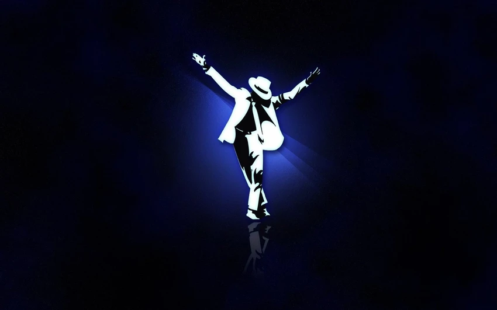

Michael Jackson
El Rey del Pop
El rey del Pop
¡Bienvenidos a nuestra "fan page" de Michael Jackson!
Explora su legado, su música, sus discos y participa en nuestro foro de fans.
El Rey del Pop
Explora su legado, su música, sus discos y participa en nuestro foro de fans.
"Michael Joseph Jackson (Gary, Indiana, 29 de agosto de 1958 - Los Ángeles, California, 25 de junio de 2009) fue un cantante, compositor, productor y bailarín estadounidense. Apodado como el «Rey del Pop», sus contribuciones y reconocimiento en la historia de la música y el baile durante más de cuatro décadas, así como su publicitada vida personal, lo convirtieron en una figura internacional en la cultura popular. Su música incluye una amplia acepción de géneros como el pop, rhythm and blues (soul y funk), rock, disco y dance, y es reconocido como el «artista musical más exitoso de todos los tiempos» por los Guinness World Records."
Una colección completa de sus álbumes de estudio, póstumos y recopilatorios más importantes.

Got to Be There (1972)
Ben (1972)

Music & Me (1973)
Forever, Michael (1975)
Off the Wall (1979)
Thriller (1982)
Bad (1987)
Dangerous (1991)

HIStory (1995)
CD2: canciones nuevas
Invincible (2001)
Michael (2010)
Xscape (2014)
Farewell My Summer Love (1984)
Number Ones (2003)

The Ultimate Collection (2004)
The Essential Michael Jackson (2005)
This Is It (2009)
Scream (2017)
Una línea del tiempo interactiva con sus mayores logros
8 premios Grammy por Thriller, récord histórico en una sola noche.
American Music Awards: Mejor Álbum Pop/Rock y Artista Masculino.
Grammy Legend Award, entregado por la Academia como leyenda musical.
Guinness World Record por el álbum más vendido: Thriller (70M copias).
Homenajes póstumos globales tras su fallecimiento, dominando Billboard.
Récord Guinness: Mayor número de discos vendidos tras fallecer.
Álbum póstumo Xscape debutó en el Top 2 de Billboard.
Artista clásico más escuchado en streaming: más de 1B de reproducciones.
Disfruta de los grandes éxitos de Michael Jackson directamente desde la playlist oficial en YouTube.
¿Tienes algo que compartir sobre Michael Jackson? 💬 ¡Únete a la conversación y deja tu mensaje en el foro!